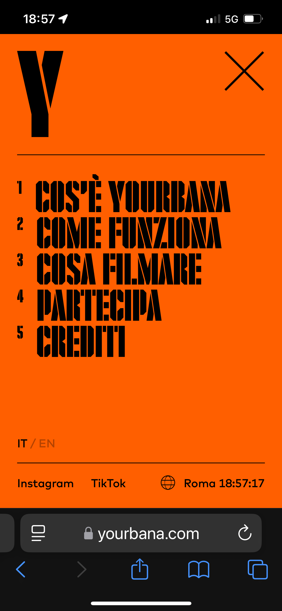
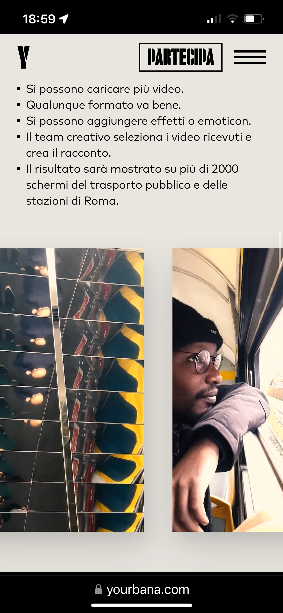

Yourbana
Yourbana es un ejemplo brillante de cómo el diseño web puede equilibrar funcionalidad y estética sin sacrificar la experiencia del usuario. Desde que se carga la página, el usuario es recibido por una interfaz visual, con colores vibrantes que captan la atención. La elección de la tipografía es moderna, con títulos llamativos y legibles que refuerzan el mensaje del sitio.

En términos de navegación, Yourbana apuesta por una estructura clara, minimalista y directa. El menú es intuitivo y fijo, permite al usuario acceder fácilmente a cualquier sección sin perderse. Además, la página está construida con un fuerte enfoque en el diseño responsivo, adaptándose perfectamente a dispositivos móviles, tablets y ordenadores, manteniendo siempre una estética cuidada y sin perder funcionalidad.
 
Uno de los aspectos más innovadores del sitio es el uso de microinteracciones y transiciones suaves entre secciones. Estas animaciones no solo enriquecen visualmente la experiencia, sino que también guían a los usuarios sin ser intrusivas. El diseño facilita la jerarquización del contenido y ofrece una lectura sencilla, destacando elementos importantes mediante uso de color y espacio en blanco, creando contrastes.

En definitiva, Yourbana es una muestra excelente de cómo un sitio web puede ser visualmente atractivo, funcional y fácil de navegar. Por estas razones fue galardonado por Awwwards, y destaca como un referente en diseño web.
Good Things Vending
Good Things Vending es un sitio web funcional y accesible, diseñado para facilitar la navegación y la interacción con el usuario. El diseño se basa en un esquema de colores de alto contraste, utilizando tonos oscuros de fondo y elementos en colores brillantes como el amarillo y verde, lo que asegura que los botones y enlaces sean fácilmente visibles y accesibles. Visualmente, el sitio emplea una tipografía sans-serif moderna que ofrece una excelente legibilidad. El tamaño y el peso de las fuentes están bien equilibrados, permitiendo una jerarquía clara de la información. Las imágenes de alta calidad, relacionadas con los productos, contribuyen a una experiencia visual coherente, mientras que los elementos gráficos refuerzan la funcionalidad sin sobrecargar la página.

La interactividad se centra en facilitar una navegación fluida y una experiencia de usuario intuitiva. Los botones grandes y las llamadas a la acción están bien ubicados, lo que mejora la conversión. La página está optimizada para dispositivos móviles, garantizando una carga rápida y una experiencia de compra sencilla y efectiva. En resumen, Good Things Vending demuestra cómo un diseño web efectivo puede combinar estética y funcionalidad, proporcionando una experiencia de usuario intuitiva y visualmente atractiva.

FWA
The FWA es una plataforma reconocida internacionalmente que premia
la innovación en diseño web, y su propio sitio refleja esa identidad
con un enfoque visual impactante y una estructura clara. Desde la
primera impresión, el diseño transmite modernidad y dinamismo, con
una interfaz que destaca proyectos creativos mediante una
presentación visual tipo galería, acompañada de una navegación
fluida y centrada en la experiencia del usuario.

A nivel visual, el sitio se apoya en un fondo oscuro que realza los
colores vibrantes y las imágenes de los proyectos destacados. La
tipografía sans-serif, limpia y contundente, refuerza la estética
contemporánea. El uso del espacio negativo y las transiciones suaves
entre secciones permiten que cada elemento respire y tenga
protagonismo, generando una sensación de orden dentro de un entorno
visualmente muy activo. Los elementos gráficos están cuidadosamente
seleccionados para no saturar. Las animaciones sutiles, los efectos
de desplazamiento y las microinteracciones aportan dinamismo sin
distraer del contenido principal. Las tarjetas de proyectos
funcionan como puntos de entrada intuitivos, combinando imagen,
título y acceso inmediato a más información, lo que mantiene el
enfoque en la exploración.

En resumen, The FWA es un claro ejemplo de cómo un sitio puede ser a
la vez una plataforma funcional y una muestra de excelencia en
diseño. La estética atrevida, unida a una navegación efectiva y a
una experiencia de usuario bien pensada, posicionan a esta web como
un referente tanto en forma como en fondo dentro del mundo del
diseño digital.

SPYLT Milk
 SPYLT Milk es un sitio que demuestra cómo el diseño web puede ser
una herramienta poderosa de branding. Desde el primer vistazo, el
usuario se enfrenta a una experiencia visual enérgica, con
ilustraciones vibrantes y un estilo gráfico desenfadado que
transmite claramente la personalidad de la marca. Es un sitio que no
teme ser diferente y lo consigue con elegancia.
SPYLT Milk es un sitio que demuestra cómo el diseño web puede ser
una herramienta poderosa de branding. Desde el primer vistazo, el
usuario se enfrenta a una experiencia visual enérgica, con
ilustraciones vibrantes y un estilo gráfico desenfadado que
transmite claramente la personalidad de la marca. Es un sitio que no
teme ser diferente y lo consigue con elegancia.

En cuanto a estructura, el sitio se basa en un diseño de scroll largo, con secciones muy bien diferenciadas por cambios de color de fondo, ilustraciones animadas y tipografía de gran tamaño. La jerarquía visual está muy bien resuelta, lo que permite al usuario identificar fácilmente cada bloque de información.
El uso de animaciones es sutil pero eficaz. Los elementos gráficos
se mueven y cambian de forma interactiva a medida que el usuario
navega por el sitio, mejorando la interacción y dando un toque
dinámico que complementa la experiencia visual.

Este sitio es un ejemplo impresionante de cómo combinar creatividad, diseño visual y experiencia de usuario de una manera fresca y estimulante.